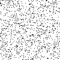
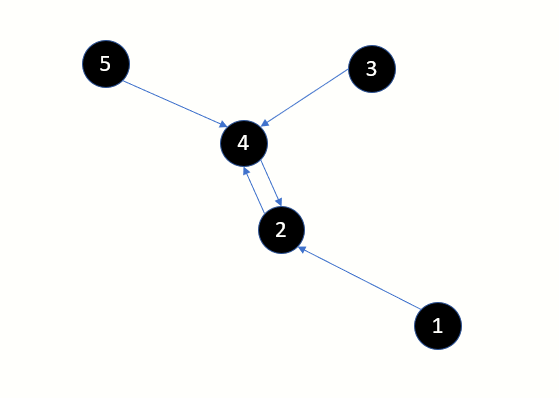
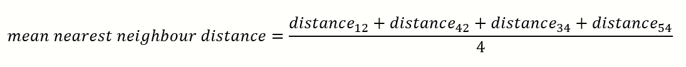
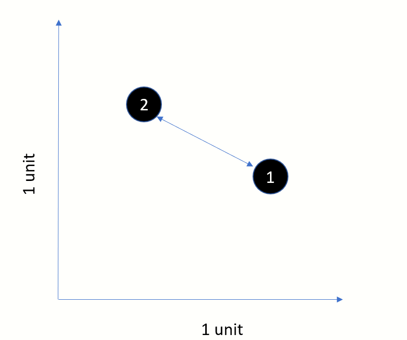
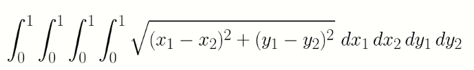

Surprising behaviour of the average nearest neighbour distance in a cluster of points
Introduction
I was staring at images which were dotted with various densities of salt and pepper noise. Some natural questions popped up in my mind - what happens to the distance between the points when they
get more and more crowded? If we were to define a metric to measure the proximity between points, say average nearest neighbour ,
then how does this metric behave with increasing density of points?

Image with salt pepper ratio=0.6

Image with salt pepper ratio=0.90

Image with salt pepper ratio=0.99
The salt and pepper ratio is defined as the probability of a randomly selected pixel being white (salt) in colour. Higher the value, lesser is the number of black pixels
and hence the points appear to be further apart. Salt and pepper noise can be applied only any image, i.e. color or gray scale.
We will restrict our examples to monochrome images only. A pixel can be white or black only.
Understanding Nearest Neighbour Distance
Consider the points displayed in this image. By definition, every point has 1 one point which is closest.
You could have multiple points which are equidistant and hence multiple nearest neighbours. But for this discussion we will pick the closest neighbour.

- Point 2 is the nearest neighbour of point 1
- Point 2 is the nearest neighbour of point 4 and vice-versa
- Point 4 is the nearest neighbour of point 3
- Point 4 is the nearest neighbour of point 5

YOU WERE HEE
Begin with just 2 points in an unit square
This is a classical problem. What is the expected distance between 2 randomly selected points in a square with side 1 unit?

The mathematical solution to this problem is not trivial and I will leave the details out this discussion.
A wonderful treatise on this subject can be found here.
From the same article, I present the equation below, which is the solution to our problem. The expected distance turns out to be 0.5214.

Monte Carlo approach to compute expected distance between 2 random points
import datetime
import math
import numpy as np
import random
import statistics
#
#Pick 2 randmom points, compute the distance and repeat several times.
#Compute average of all distances
#
def compute_expected_distance_between_2points_n_trials(max_trials:int):
seed=datetime.datetime.now().second
random.seed(seed)
distances=[]
for i in range(0,max_trials):
x1=random.random()
y1=random.random()
x2=random.random()
y2=random.random()
distance=math.sqrt( (x1-x2)**2 + (y1-y2)**2 )
distances.append(distance)
return statistics.mean(distances)
iterations=100000
average=compute_expected_distance_between_2points_n_trials(10000)
print("Average=%f after iterations=%d" % (average,iterations))
In this simple Python program we generate pairs of random points and calculate the distance using Pythagoras theorem.
Running the above with 100000 iterations gave me a value of 0.522079 which is quite close to the theoretical value of 0.5214
What happens if we increase the number of points?
The following pyhthon snippet...blah
Python program below

Why does the average neighbour distance exhibit such a distribution?
We can see that at N=2, the average is .5BLAH. With increasing N, the average distance falls very rapidly and then flattens out.
Finding a mathematical model
We will make some approximations. Consider a square with N=4 points, N=9 points and N=16 points
Looking at the above, we can come up with the following approximation:
Show approx equation here
Plotting the simple mathematical model with N
Show desmos here
Write down the derivative
Conclude that with increasing N the slope becomes 0 and thus the curve flattens out.
Introduction
to be done 13